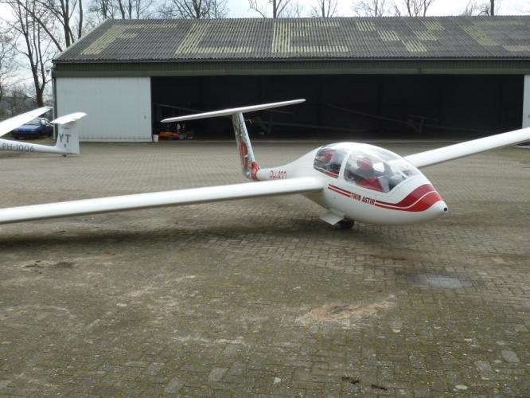

De Twin Astir is een tweezitter die samen met de ASK-21 wordt ingezet voor het lesvliegen. De Twin staat bekend om zijn goede comfort, waardoor deze ook een populair vliegtuig is om lange vluchten mee te maken of om introducés mee te nemen.
| Registratie | Callsign | Bouwjaar | Spanwijdte | Lengte | leeggewicht | Overtreksnelheid | Maximum Snelheid | Beste Glijgetal | Aerobatics |
|---|---|---|---|---|---|---|---|---|---|
| pH-832 | YO | Onbekend | 17,5 Meter | 8,1 meter | 390 Kg | 65 Km/h | 250 Km/h | 38 (bij 110 Km/h) | Niet toegestaan |